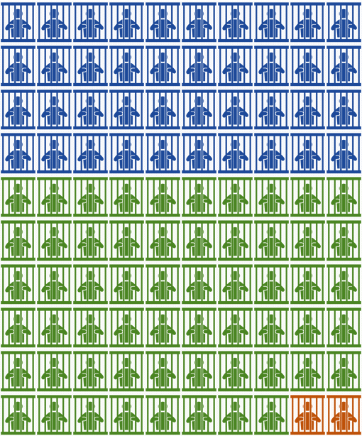
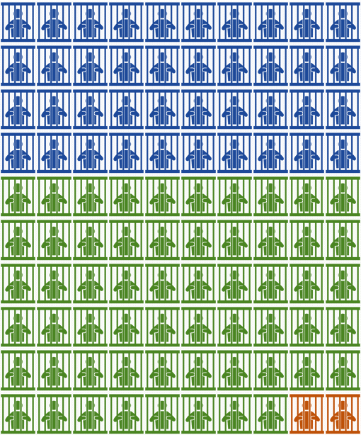

A major problem within the U.S. Criminal Justice System is the known existence of systematic bias in the sentencing of criminals of different races. It has been shown that Black individuals are statistically more likely to be get longer prison sentences and be considered "higher risk" compared to white individuals with similar criminal histories. [1]
 

Details
Something small enough to escape casual notice.